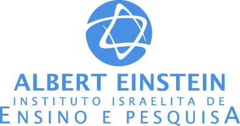
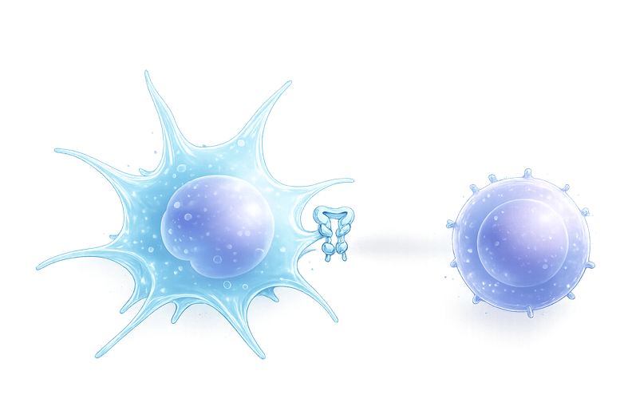
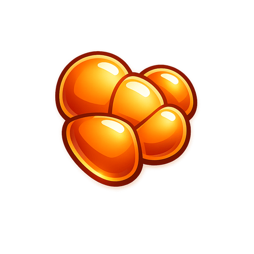
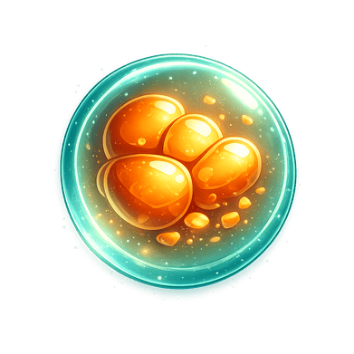
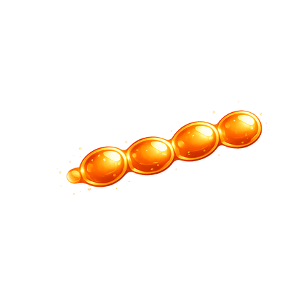
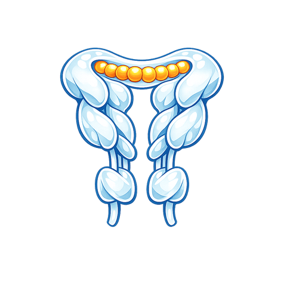
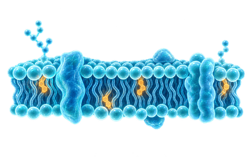
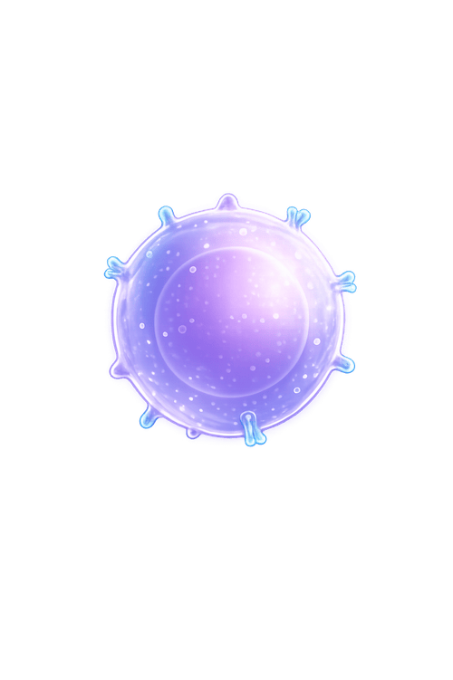

Organize proteínas capturadas pela célula dendrítica. Ao completar uma faixa, acompanhe o peptídeo até o MHC II e veja se uma célula T CD4 reconhece o antígeno.
Quando um peptídeo entra no MHC II e é reconhecido por uma célula T CD4, a fase termina. A próxima começa vazia e mais rápida.
Tutorial
Da célula dendrítica ao linfócito T
1. OrganizeComplete uma faixa para representar a digestão do antígeno em vesículas da célula dendrítica.
2. ProcesseAlguns peptídeos conseguem ser carregados em MHC II, mas nem todos entram com sucesso.
3. ApresenteO complexo MHC II com peptídeo chega à membrana e fica visível para células T CD4.
4. AvanceSe a célula T CD4 reconhece o peptídeo, a fase é concluída. Se não reconhece, a partida continua.
◀▶↻ grande↓
Na tela, mover fica nos botões de cima das colunas laterais. Girar fica embaixo à esquerda, e descer fica embaixo à direita. Arrastar para baixo faz a peça descer, e um gesto rápido para baixo faz a queda direta.
Células dendríticas São células apresentadoras de antígeno especializadas na ativação de linfócitos T. Na via mais clássica, exibem peptídeos em MHC II para células T CD4. Elas também podem secretar citocinas, representadas no jogo como bônus que abrem espaço no tabuleiro.
Apoios
Realização e créditos
Uma criação de
Prof. Helder Nakaya
Hospital Israelita Albert Einstein · USP
Realização
Sociedade Brasileira de Imunologia · SBI
Apoio institucional

Instituto Israelita de Ensino e Pesquisa Albert Einstein
CT Vacinas · Centro de Tecnologia de Vacinas
Pausado
◀▶↻ girar↓
Arraste no campo para mover e descer · gesto rápido para baixo solta a peça · P pausa · M som
Célula dendrítica · MHC II
Apresentação interrompida
O acúmulo de antígenos chegou ao topo antes do próximo reconhecimento por célula T.
0peptídeos
1nível
0pontos

Se não há apresentação eficaz de antígeno em MHC II, a célula T CD4 não é ativada. Sem esse reconhecimento, a resposta adaptativa perde coordenação.
1
Sem ativação de T CD4Não há sinal forte pelo TCR, então a célula T não entra em expansão clonal.
2
Menos citocinasSem reconhecimento, cai a produção de IL 2 e outros sinais que reforçam a resposta imune.
3
Menos ajuda imuneSem T helper ativa, há menos ajuda para linfócitos B, macrófagos e memória imunológica.
Compartilhar
Seu resultado para Instagram
Gere um card vertical com sua pontuação. Em celulares compatíveis, o botão de compartilhar pode abrir o Instagram diretamente.
Se o Instagram não abrir automaticamente, baixe a imagem e publique nos Stories ou no feed.
Célula dendrítica e MHC II

Antígeno externo
→

Endossomo
→

Peptídeo
→

MHC II
→

Membrana celular
→

Célula T CD4
Nesta representação, o tabuleiro é um compartimento da célula dendrítica onde antígenos capturados são digeridos. Alguns peptídeos entram em moléculas de MHC II e o complexo segue para a membrana. Na superfície, linfócitos T CD4 podem ou não reconhecer o peptídeo apresentado.
Células dendríticas são apresentadoras de antígeno especializadas. Nesta versão do jogo, o foco principal é a apresentação em MHC II para células T CD4.
O jogo simplifica a digestão em endossomos, o carregamento do MHC II e o encontro com a célula T. Apenas uma fração dos peptídeos gerados chega a ser apresentada, e o reconhecimento também pode falhar.
Controles: botões laterais em duas colunas, com mover em cima e girar ou descer embaixo. Arraste para baixo para acelerar, e um gesto rápido para baixo faz a queda direta.